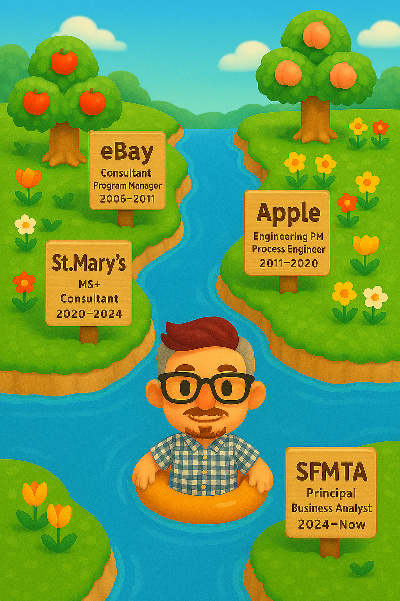

The Career River
Six stops · Nineteen years · One winding ride — 2006 → present

Each wooden sign marks a career stop. Floating downstream through consulting, product, process engineering, teaching, and public sector — carried by curiosity the whole way.